Project documentation · prototype review
Features, Technology Stack, Architecture, Data Sources and Workflow
An AI-assisted legal research workspace for Indian advocates — answers grounded in official bare acts and the lawyer's own case files, with numbered citations that can be checked.
| Document purpose | Explain the project, in plain English, to mentors and reviewers who are not software or AI specialists. |
| Prototype status | Working prototype, run on a single computer (127.0.0.1) and connected to a Supabase cloud project in the Mumbai region. Not deployed for public use. |
| Based on | The code in the repository SwarangiK-21/NyaySutra-AI (branch main, commit 8e63731 plus one uncommitted dashboard fix), the live Supabase project and the running application, inspected on 25 October 2026. |
| Student / team | [ To be filled in — not recorded in the repository ] |
| Mentor | [ To be filled in ] |
| Institution / course | [ To be filled in ] |
How to read the status labels in this document
Implemented found in the code and seen working Partial works with clear limits Planned not built yet Needs verification could not be confirmed
NyaySutra (from nyaya, justice, and sutra, a thread or formula) is a prototype legal research assistant for Indian advocates. A lawyer can keep each matter (case) in one place, upload the case papers, and ask questions in plain language. NyaySutra searches the lawyer's own documents and a library of official bare acts (the exact text of Indian laws, downloaded from the Government's India Code website), and then writes an answer in which every statement points to a numbered source that the lawyer can open and check.
The problem it addresses. Legal research means finding the right section of the right Act, reading long judgments and case papers, and connecting the facts of a matter to the law. This takes time, legal language is hard for juniors and clients, and an ordinary AI chatbot can invent sections or case names that do not exist. NyaySutra's design goal is the opposite: answer only from sources that can be shown, and say clearly when the sources do not cover the question.
Who may benefit. Practising advocates and junior lawyers (the main persona, called Lawyer in the app), law firms or chambers (an Administrator manages people and settings), and — for the public awareness pages only — members of the public.
What the current prototype can do (all verified in the running application):
| Area | What a user can do today |
|---|---|
| Legal research chat | Ask questions in English, Hindi or Marathi (typed, or spoken through the browser); get a cited answer with a Sources panel and an automatic citation check. |
| Case files | Create a matter, upload papers (PDF including scanned PDFs, Word, Excel, CSV, PowerPoint, OpenDocument, RTF, text, photos), and have them read, indexed and summarised. |
| Law library | 31 bare acts are indexed (29 central, 1 Maharashtra, 1 Karnataka), plus 3 sample judgments and 22 drafting templates; any further central or state act can be searched on India Code and added in one click. |
| Drafting | Generate drafts (plaint, written statement, bail applications, legal notices, Section 138 NI Act demand notice and others) that keep unknown facts as placeholders; review, approve and export to Word or PDF. |
| Planning | A calendar for hearings, deadlines and tasks, with reminders sent by the server even when the app is closed. |
| Tools | Limitation-period calculator, case-number lookup helpers, legal-news headlines, state-wise legal awareness pages. |
| Accounts & security | Public sign-up (always as a Lawyer), e-mail verification, two-step verification, roles, per-case access, database-level row security, audit log. |
Honest summary of maturity. This is a working prototype, not a production service. It runs on one computer, the law library covers a curated set of acts rather than all of Indian law, the AI can still make mistakes (which the citation check tries to catch, not guarantee), and several protections that a production legal service needs — independent security testing, malware scanning, hosting, backups and monitoring — are not in place yet. Chapter 17 lists what is done, partial and planned.
Indian legal research has a few practical difficulties that this project tries to address. These are general observations, not measured claims about the legal system.
NyaySutra's response is to (a) keep the lawyer's matter and documents together, (b) answer only from retrieved, numbered sources, (c) check those citations automatically, and (d) make it easy to open the original text.
| Persona | What they can do |
|---|---|
| Lawyer (anyone who registers and verifies their e-mail) | Create and work on their own matters, research, draft, use the calendar and history, add official acts to the library. |
| Administrator (appointed by another administrator, never self-chosen) | Everything a lawyer can do, plus manage users and roles, invitations, organisation settings, integrations and the activity (audit) log. Sees the organisation's list of matters but not their contents unless added to the case. |
| Visitor (not signed in) | Read the bare acts, the India Code catalogue, legal-awareness pages and the limitation calculator. |
Earlier versions had Client and Security auditor roles; they were removed in October 2026 (database migration 07).
Each feature below follows the same pattern: what it does → why it is needed → how a user uses it → what happens behind the scenes → technology and data → an example → status.
case_members; the server checks it on every request and the database enforces it again with row-level security.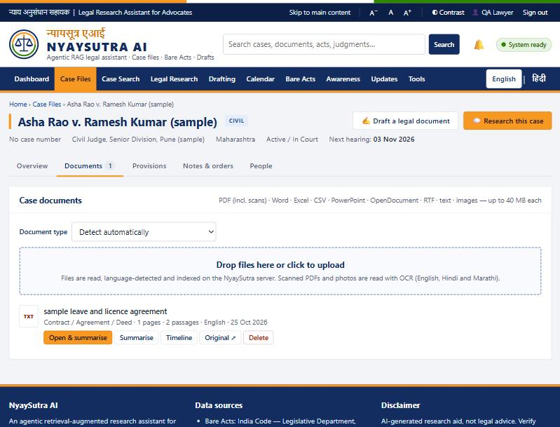
[?word] rather than guessed. A quality check warns about blank pages, garbled text or missing page numbers..doc files need an extra tool (antiword) that is not installed.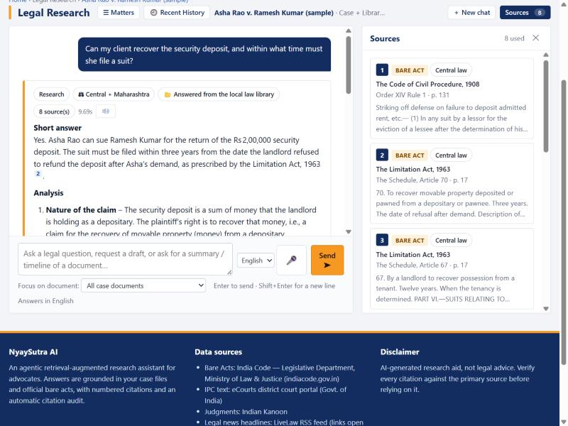
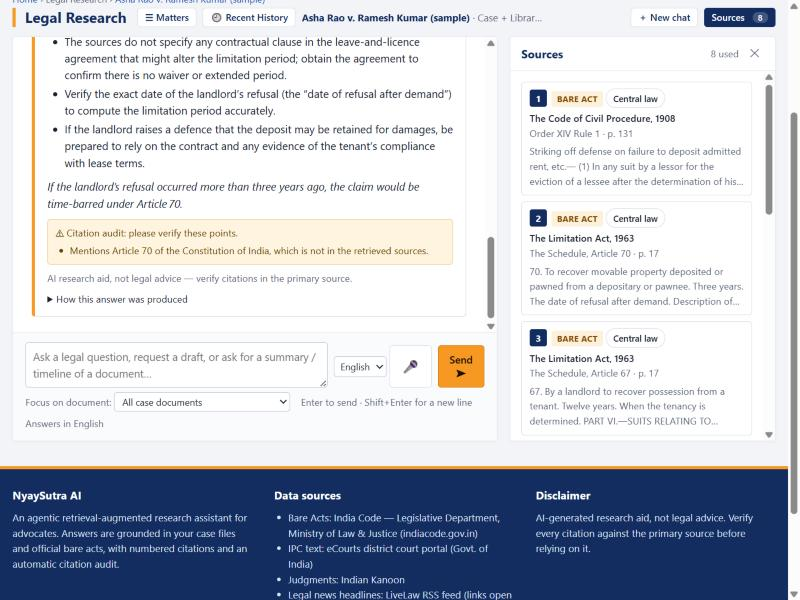
chats, messages, search_history) and protected so that only their owner can read them. An administrator can set a retention period after which old conversations and searches are deleted.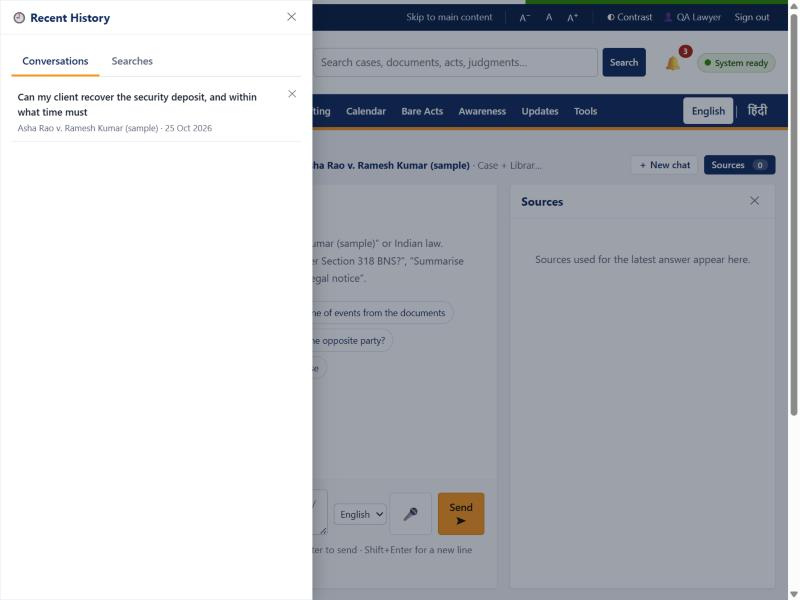
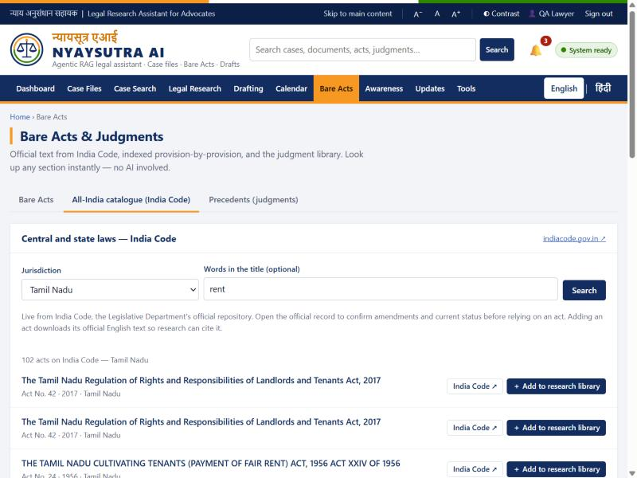
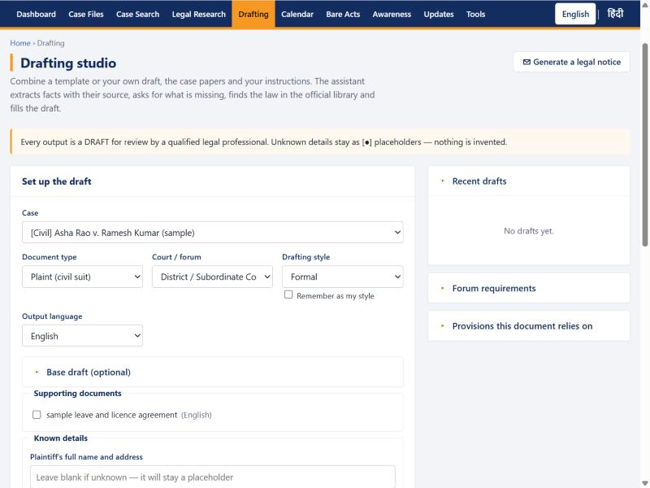
Suggests acts and sections that may apply to a matter; each suggestion is checked against the library ("verified in library" or "not found") and the lawyer accepts, rejects or edits it.
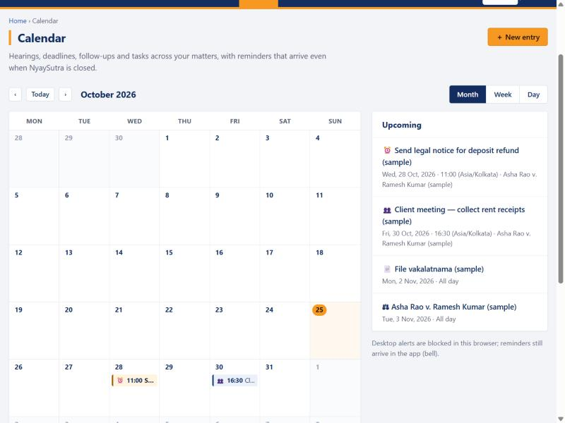
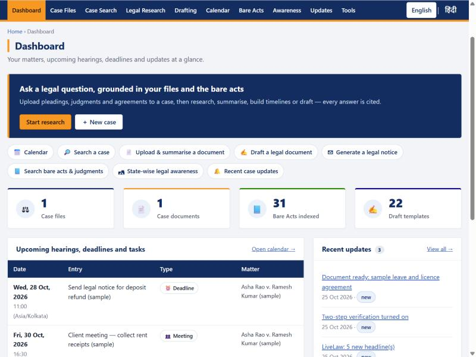
24 categories of proceedings from the Limitation Act's schedule; the last date is computed by ordinary code (not by AI), with the legal basis and a caveat. Available without signing in.
8 curated items (5 central, 3 Maharashtra) with official links and FAQs; statute text shown is pulled from the library. Other States are not yet covered by curated content.
The browser's own speech service turns speech into text in English, Hindi or Marathi; nothing is sent until the user presses Send. NyaySutra never receives audio. Note: some browsers (for example Chrome) process speech on the browser maker's servers — Needs verification per browser before recommending it for confidential dictation.
Administrators see users, change roles (Lawyer / Administrator), disable accounts, send invitations, withdraw pending invitations, read the audit log, manage integrations and set the chat-retention period. Administrators can see the list of matters but not their contents unless they add themselves to the case (which is logged).
If the language model service is slow or failing, NyaySutra retries with increasing waits, stops calling a failing model for a minute ("circuit breaker"), and switches to an approved backup model (gpt-oss:20b); answers produced this way are labelled fallback model. An answer cut off mid-way is marked incomplete and not verified. Long tasks are durable background jobs that survive restarts, can be cancelled and are retried a bounded number of times.
A FAQ page as a separate feature does not exist (FAQs appear inside awareness items). There is no payment, client portal, mobile app, automatic court-data fetching, licensed case-law database or public hosting.
The diagram shows the typical path through the application, matched to the real screens.
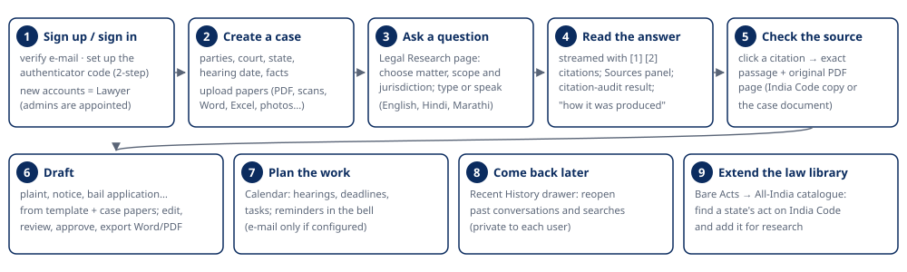
Step by step:
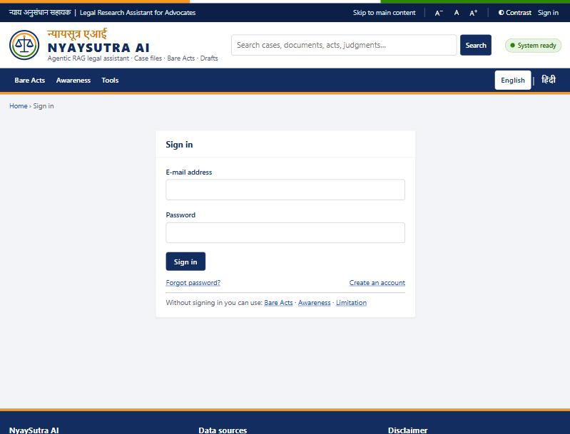
All entries below were confirmed in the code, configuration and running system. Versions come from requirements.txt unless noted.
| Technology / platform | What it is | Why we use it | Where in NyaySutra | Data passing through it | Status |
|---|---|---|---|---|---|
| Python 3 | Programming language | Mature AI and document libraries | Whole server (nyaya/) |
All | Implemented |
| FastAPI 0.143 + Uvicorn | Web framework and web server | Fast, typed APIs; streaming answers | nyaya/server.py (~114 routes) |
Every request | Implemented |
| Plain JavaScript, HTML, CSS | Browser front end, no framework | Small, strict security policy (no third-party scripts) | web/ |
Screens, user input | Implemented |
| Supabase Auth | Hosted user-account service | Proven password, e-mail and two-step handling | Sign-up, sign-in, reset, two-step | E-mail, password (hashed by Supabase), codes | Implemented |
| Supabase Postgres | Hosted database | Reliable storage with row-level security | 34 tables (Chapter 11) | Cases, document text, passages, chats, drafts, calendar | Implemented |
| Supabase Storage | Hosted file storage | Keeps original files private, off the server disk | Bucket case-files (private) |
Uploaded case files | Implemented |
| Supabase Vault | Encrypted secret store | Sign-in tokens never stored in plain text | Session tokens | Supabase tokens | Implemented |
| Supabase Realtime, Edge Functions, Data API, pgvector | Other Supabase services | — | Not used. The Data API is deliberately closed to browser roles; vectors are searched in the app's memory | — | Not used |
Ollama Cloud — gpt-oss:120b, gpt-oss:20b |
Hosted large language models | Answers, planning, summaries, translation, drafting, citation double-check; backup model | nyaya/llm.py |
Question, chat history excerpt and retrieved passages, with identity numbers masked | Implemented |
| fastembed 0.9 (ONNX Runtime) with BAAI/bge-small-en-v1.5 | Local embedding model | Converts passages to 384-number "meaning" vectors, on our own machine | nyaya/embeddings.py |
Passage text (never leaves the server) | Implemented |
Cross-encoder re-ranker Xenova/ms-marco-MiniLM-L-6-v2 |
Local ranking model | Picks the passages that really answer the question | nyaya/retrieval.py |
Question + passages (local) | Implemented |
| In-memory vector index (NumPy) | Exact similarity search | Simple and exact at current size (~9,700 passages) | nyaya/vectorindex.py |
Vectors loaded from Postgres | Implemented |
| Postgres full-text search (SQLite FTS5 in local mode) | Keyword search | Section numbers, defined terms, names | nyaya/retrieval.py |
Passage text | Implemented |
| pypdfium2 5.14 | PDF reader (Chrome's PDF engine) | Accurate text extraction; safe for untrusted files | nyaya/parsing.py, upload checks |
Uploaded PDFs | Implemented |
| RapidOCR 3.10 (ONNX models) | OCR engine | Reads scanned PDFs and photos (English, Hindi, Marathi) without admin install | nyaya/ocr.py |
Page images (local) | Implemented |
| python-docx, openpyxl, xlrd, python-pptx, striprtf, defusedxml | Office/format readers | Word, Excel, PowerPoint, RTF, OpenDocument, safe XML | nyaya/parsing.py |
Uploaded files | Implemented |
| fpdf2 + uharfbuzz | PDF writer with Indic text shaping | Export drafts to PDF with correct Hindi/Marathi | nyaya/export.py |
Draft text | Implemented |
| psycopg 3 + psycopg-pool | Postgres driver | Secure (TLS) pooled database connections | nyaya/db.py |
All database traffic | Implemented |
| httpx | HTTP client | Calls to Supabase Auth/Storage, Ollama, India Code, LiveLaw | several | Requests to those services | Implemented |
| Web Speech API | Browser speech service | Optional voice input / read-aloud | web/js/voice.js |
Speech handled by the browser | Implemented |
| pytest | Test framework | Automated tests | tests/ (9 files) |
Synthetic data only | Implemented |
| Git + GitHub | Version control | History, review, backup of code | Repository SwarangiK-21/NyaySutra-AI |
Code (no secrets; .env is ignored) |
Implemented |
| SMTP mail server | E-mail sending | Optional e-mail reminders | nyaya/mailer.py |
Reminder text | Built, not configured |
| ClamAV | Virus scanner | Optional extra upload scan | nyaya/filescan.py |
Uploaded files | Supported, not installed |
| Tesseract OCR | Alternative OCR engine | Used instead of RapidOCR if installed | nyaya/ocr.py |
Page images | Supported, not installed |
| Hosting / deployment / monitoring | — | — | No cloud hosting, container, CI pipeline or monitoring service exists | — | Planned |
Configuration lives in a private .env file that is never committed. Its setting names (values are secret and not shown) include: SUPABASE_URL, SUPABASE_DB_URL, SUPABASE_SECRET_KEY, SUPABASE_PUBLISHABLE_KEY, SUPABASE_BUCKET, OLLAMA_API_KEY, OLLAMA_HOST, LLM_MODEL, FAST_LLM_MODEL, LLM_FALLBACK_MODEL, EMBED_MODEL, RERANK_MODEL, AUTH_MODE, SIGNUP_MODE, MFA_REQUIRED_ROLES, SESSION_TTL_HOURS, SESSION_IDLE_MINUTES, APP_SECRET_KEY, OCR_ENGINE, SMTP_HOST, DEFAULT_TIMEZONE and the various limits.
Why Supabase? It gives the four building blocks the project needs — accounts, a Postgres database with row-level security, private file storage and an encrypted vault — as one managed service with a data centre in Mumbai, so the team did not have to build or run them itself. The project uses Supabase from the server only: the browser never talks to Supabase directly.
Needs verification: the exact data-retention and privacy terms of Ollama Cloud for prompts sent to it; the speech-processing location of each browser's speech service.
| Source | Type | How NyaySutra accesses it | Used for | Limits / notes |
|---|---|---|---|---|
| India Code (indiacode.gov.in), Legislative Department, Ministry of Law & Justice | Primary legislation (central and state acts) | Official public REST API (DSpace) — by a download script for the core set, and live from the All-India catalogue for imports; daily update check | Bare-act library, section lookup, research, provision verification | Coverage is what India Code holds; some acts appear twice, some lack an English file; consolidations may lag amendments. Attribution shown on every act ("India Code"). |
| eCourts district court portal (s3waas.gov.in host) | Copy of the IPC text (India Code text) | One-time manual download (address recorded in the download script) | IPC kept for pending matters | IPC was repealed from 1 July 2024; labelled as repealed. |
| Indian Kanoon (indiankanoon.org) | Case-law (judgments) | Manual download of three judgment PDFs stored in the library. No Indian Kanoon API or scraping exists in the code. | Sample precedents | Three judgments only — not a case-law database. One file's date in the source name is a placeholder. Indian Kanoon's terms apply to the downloaded copies. |
| LiveLaw (livelaw.in) | Legal news | Official RSS feed, polled hourly | Headlines on Updates and in search | Headlines and links only; full articles open on livelaw.in. |
| eCourts, Supreme Court, Bombay High Court, Maharashtra Police citizen portal | Case status, FIRs | Links only — opened by the user (CAPTCHA, no API). Never automated. | Case-information search helper | Users may import what they obtain themselves. |
| LatestLaws | Legal news / research | Link only (no feed; robots.txt disallows its API) | Listed as a manual source | — |
| User uploads | Client papers, orders, notices | Uploaded by the lawyer | Case research, drafting, summaries | Confidential; private storage; per-case access. |
Curated awareness content (data/awareness/awareness.json) |
Secondary, plain-language explanations with official links | Written into the project | Awareness pages | 8 items; "last verified" dates shown. |
Draft templates (data/library/drafts/) |
Drafting models | Written into the project | Drafting | Templates are not authority and are excluded from research answers. |
Data quality and reliability. Statutes are taken from the official government source and labelled with their jurisdiction; repealed acts are labelled; each imported act records where and when it was fetched. Every answer shows exactly which passage was used, so the lawyer can verify it. Coverage is not comprehensive: the library holds 31 acts and 3 judgments; any other law must be added (or is simply not available to the assistant).
Why an ordinary chatbot may be wrong. A large language model (LLM) is a program trained on a huge amount of text to predict good next words. It writes fluent answers from memory — but its memory can be old, incomplete or mixed up, and it does not show where a statement came from. When it does not know, it may still produce a plausible-sounding section number. This is called a hallucination.
What RAG does. Retrieval-Augmented Generation means: first find the relevant pages, then let the AI write only from those pages. It is like giving a research assistant the exact law-book pages before asking the question, and requiring every sentence to point to a page.
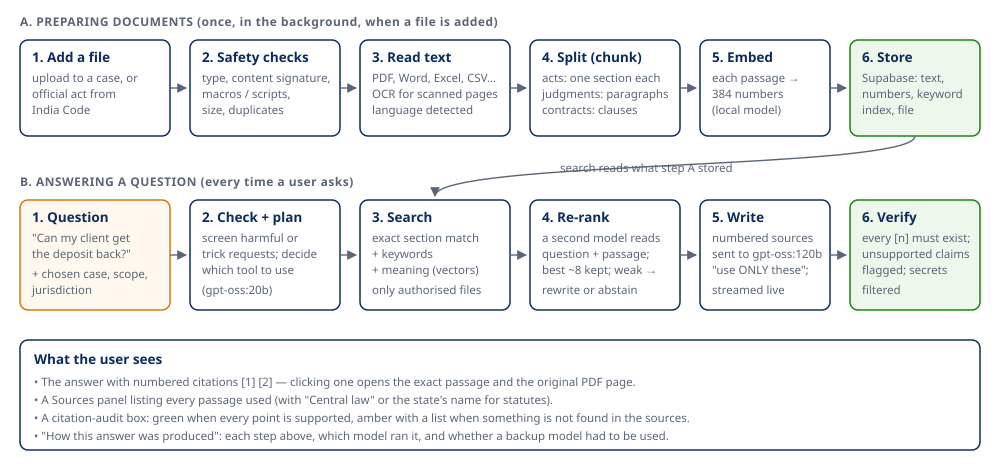
Key ideas, as used in NyaySutra:
Example, start to finish. Question: "Can my client recover the security deposit, and within what time must she file a suit?" → the app recognised a research question (planner, gpt-oss:20b) → searched the case file and library, restricted to central law + Maharashtra → found 8 passages including the Limitation Act's Schedule (Articles 70 and 67) and CPC Order XIV → gpt-oss:120b wrote the answer citing them → the audit found one unsupported point and showed it → the trace listed every step and model.
Remaining risks (stated plainly). The answer can only be as good as the library: a missing State act or an amendment not yet reflected in India Code's file will not be found. The model can still misread a correct passage. The audit catches some but not all errors. Answers must be checked by a qualified lawyer.
Verdict: NyaySutra uses a single "agentic" pipeline, not a multi-agent system. One planner decides which of five tools to use for each question; the tools are ordinary code paths, not independent agents talking to each other. (A proposal for supervisor/specialist agents was reviewed in October 2026 and deliberately not built.)
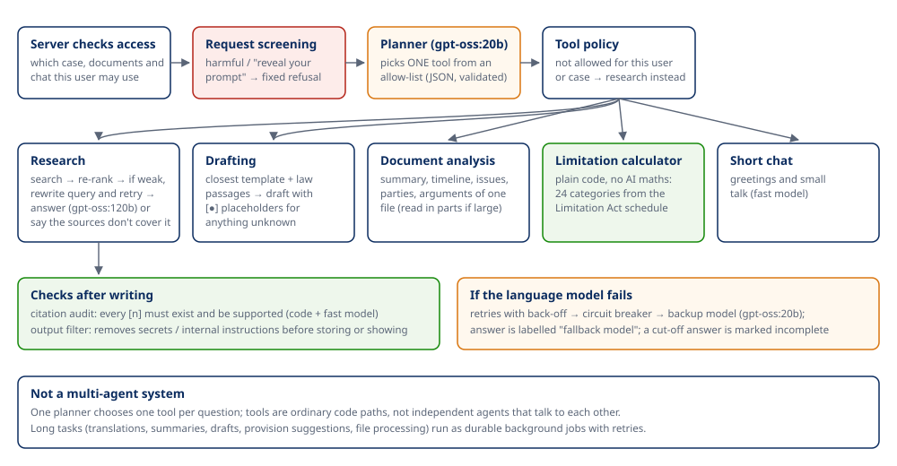
| Component | Input | Output | Can call |
|---|---|---|---|
| Access check (server) | User, chosen case/document/chat | Allowed scope | Database |
| Request screening (code) | Question | Continue, or a fixed refusal | — |
| Planner (gpt-oss:20b) | Question, short history, list of case documents | One tool + validated arguments (JSON) | — |
| Research tool | Question, scope, jurisdiction | Cited answer | Search engine, gpt-oss:120b |
| Drafting tool | Request, templates, law passages | Draft with placeholders | Search engine, gpt-oss:120b |
| Document analysis tool | One document | Summary / timeline / issues / parties / arguments | gpt-oss:120b |
| Limitation calculator | Proceeding type, start date | Last date + basis | Plain code |
| Short chat | Greeting | Short reply | gpt-oss:20b |
| Citation audit + output filter | Answer + sources | Supported / list of issues; cleaned text | Code + gpt-oss:20b |
Fallback behaviour: retries with back-off; a circuit breaker after 4 failures for 60 seconds; the backup model; answers labelled when the backup was used; incomplete answers labelled. If the planner fails, the request is treated as research. Background jobs re-check the user's permission when they run and are retried up to a limit, then marked failed with the reason.
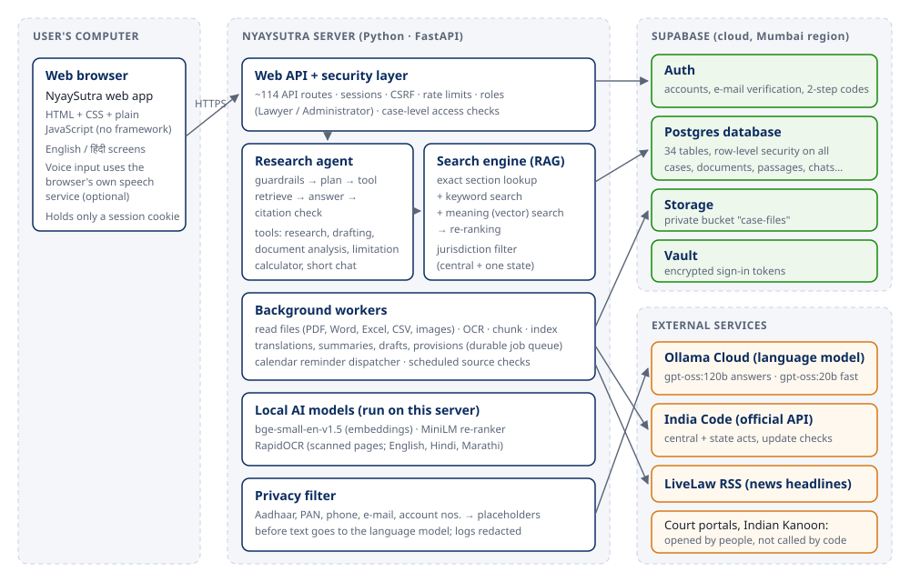
In plain terms:
Code and documentation disagreements found. Some code comments still describe SQLite as the main database (the app supports both; the live system uses Supabase Postgres). docs/IMPLEMENTATION_PLAN.md describes the state of 22 October 2026 (single user, SQLite, "Tesseract not installed") and is now outdated. The git history shows an earlier Streamlit + LangGraph prototype that the current code no longer uses.
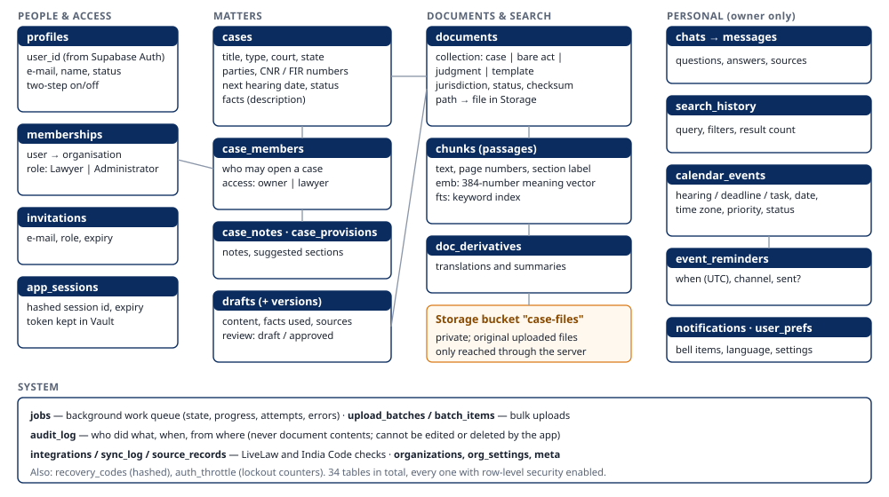
profiles (one per account), memberships (role in the organisation), invitations, app_sessions (only a fingerprint of the session cookie is stored), recovery_codes (stored as one-way fingerprints).cases, case_members (owner / lawyer), case_notes, case_provisions, drafts and draft_versions.documents (one row per file or act, with jurisdiction, status and a checksum to detect duplicates), chunks (the passages with their meaning vectors and keyword index), doc_derivatives (translations and summaries).chats and messages, search_history, calendar_events and event_reminders, notifications, user_prefs.jobs, upload_batches, batch_items, audit_log, integrations, sync_log, source_records, organizations, org_settings, meta, auth_throttle.File lifecycle. Upload → checks → stored in the private bucket case-files under a server-generated name → text extracted and indexed → shown only through the server after an access check → deleted together with its passages when the document or case is deleted. Office files are always downloaded rather than displayed inside the app. Library acts are stored on the server's disk under data/library/.
How users' records are separated. Every request is checked by the server; in addition, row-level security (RLS) is switched on for all 34 tables: the database itself only returns rows the current user may see (their cases, their chats, their calendar). The database's public Data API is closed to browser roles, and the audit log cannot be edited or deleted by the application.
| Control | In code? | Tested? |
|---|---|---|
| Accounts via Supabase Auth; e-mail verification; password rules | Yes | Automated tests (with a fake Auth server) + live test |
| Two-step verification (authenticator codes), recovery codes, device list | Yes | Automated + live test |
| Server-side sessions; HttpOnly, SameSite=Strict cookie; CSRF token; host/origin checks; idle and absolute expiry | Yes | Automated tests |
| Account lockout (5 failures / 15 min); rate limits on sign-in, sign-up, chat (20/min), uploads (60/min) | Yes | Automated tests |
| Roles (Lawyer, Administrator) and per-case access, checked on every request | Yes | Automated tests incl. cross-user isolation |
| Row-level security on all 34 tables; Data API closed | Yes | Live tests against Supabase (another user, an anonymous caller and an escalation attempt are refused) |
| Upload checks: type allow-list, content signature, PDF JavaScript, Office macros / embedded objects / external links, size | Yes | Automated tests |
| Virus scanning (ClamAV) | Partly | Not installed |
| Prompt-injection defences: hidden-character removal, request screening, source delimiters, injection flags, allow-listed tools | Yes | Automated tests |
| Output filter (secrets, internal instructions); citation verification | Yes | Automated tests |
| Identity numbers masked before text reaches the language model; log redaction | Yes | Automated tests |
| Audit log (actor, role, IP, outcome; never document contents), append-only | Yes | Automated + live test |
Secrets in .env only, never committed; tokens in Vault |
Yes | Checked before each commit |
| Leaked-password protection (Supabase setting) | — | Off — recommended to enable |
| Independent penetration test, backups, monitoring/alerting | — | Not done |
What this does not mean. These controls exist and are covered by automated tests, but the system has not been independently audited and is not claimed to be fully secure. Names, addresses and facts are sent to the language model when needed for analysis (only identity numbers are masked) — clients' consent and the provider's terms must be considered before real data is used.
Recommended additional tests: an external penetration test; automated dependency vulnerability scanning; a load test; a restore-from-backup drill; red-team prompt-injection documents in Hindi and Marathi.
[?word]; unknown facts in drafts stay as [●].| Page (menu) | Purpose | Main actions |
|---|---|---|
| Sign in / Create account / Forgot password | Access | Sign in, register, reset, two-step code |
| Dashboard | Overview | Start research, new case, quick links, upcoming items, updates |
| Case Files | Matters | List and filter, create, open; tabs Overview / Documents / Provisions / Notes & orders / People |
| Case Search | Identifier search | Validate numbers, find workspace matches, open official portals, import |
| Legal Research | Cited AI answers | Matters panel (matter, scope, jurisdiction), Recent History drawer, Sources panel, voice, new chat |
| Drafting / Legal notice | Drafts | Generate, edit, review, approve, export Word/PDF |
| Calendar | Planning | Month/week/day, new entry, complete, reschedule, cancel, delete, desktop alerts |
| Bare Acts | Law library | Section lookup, filter by jurisdiction, All-India catalogue, judgments |
| Awareness | Public legal information | Choose State and topic |
| Updates | Notifications and news | Mark read, sources status, LiveLaw headlines, activity log (admin) |
| Tools | Utilities | Limitation calculator, draft templates, jobs, privacy settings, about |
| Account | Personal settings | Name, password, two-step, signed-in devices |
| Administration (admin only) | People and roles | Users, roles, disable, invitations, audit log |
| Header controls | Accessibility | Text size A−/A/A+, high contrast, English/हिंदी, system status, notification bell |
The screenshots in this document were taken from the running prototype with synthetic sample data created for this purpose and deleted afterwards. The administration page is described from the code; it was not captured.
The server exposes about 114 routes. Grouped by purpose (no credentials or payloads shown):
| Group | Examples | Purpose | Errors returned |
|---|---|---|---|
| Session & auth | /api/session, /api/auth/login, /api/auth/signup, /api/auth/mfa/*, /api/auth/password/*, /auth/callback |
Sign-in, two-step, reset | 401 not signed in, 403 forbidden, 429 too many attempts |
| Cases & people | /api/cases, /api/cases/{id}/members, /notes, /provisions |
Matters and access | 404 for cases the user cannot see (does not reveal they exist) |
| Documents | /api/cases/{id}/documents, /api/documents/{id}/file, /text, /intel, /translate, /summarize, /reprocess, /api/batches |
Upload, view, AI on documents | 415 wrong file type, 413 too large, clear reasons for quarantined files |
| Research | /api/chat (streaming), /api/chats, /api/history, /api/search, /api/library/*, /api/jurisdictions |
Answers, history, search, library | Error events in the stream; 422 invalid input |
| Drafting | /api/drafting/*, /api/drafts/* |
Drafts and export | 409 if approval is blocked by placeholders |
| Calendar | /api/calendar/* |
Entries and reminders | 400 invalid dates/times, 404 for others' entries |
| Jobs & updates | /api/jobs/*, /api/notifications, /api/news, /api/integrations/* |
Background work, bell, news | Job states: queued, processing, completed, partial, failed, dead, cancelled |
| Administration | /api/admin/*, /api/audit |
Users, roles, invitations, log | 403 for non-administrators |
Outbound integrations: Supabase Auth, Postgres, Storage and Vault; Ollama Cloud; India Code API; LiveLaw RSS; optional SMTP. Each external call has time limits and readable error messages; India Code calls are restricted to indiacode.gov.in.
Automated tests (executed on 25 October 2026):
| Test file | What it checks | Tests |
|---|---|---|
test_security.py |
Accounts, two-step, sessions, CSRF, roles, cross-user isolation, uploads, guardrails, audit, redaction | 35 |
test_features.py |
Case forms, case search and record import, news-feed sync, languages, OCR rules, translation, summaries, provisions, drafting, export, awareness, unified search, retention | 29 |
test_reliability.py |
Job queue, retries, cancellation, OCR checkpoints, LLM fallback, draft review, act versions | 18 |
test_upgrades.py |
Open sign-up, personas, India Code catalogue/import, jurisdiction filter, history, calendar, reminders, e-mail retries | 13 |
test_formats.py |
Every upload format, OCR on scanned PDFs and photos, refusal of macros/embedded objects | 11 functions (15 cases) |
test_core.py, test_api.py, test_supabase.py |
Chunking, retrieval, chat stream, Supabase layer | 7 + 6 + 9 |
test_live_security.py (opt-in, real Supabase) |
Row-level security, calendar/history privacy, auth + two-step + Vault, job queue | 4 |
Results: 131 offline tests passed (5 live tests skipped in that run); the 4 live security tests passed when run against the real project with the app stopped. One live test in test_supabase.py was not re-run during this documentation pass. Offline tests use a fake language model and fake embeddings, so they test the plumbing and safety logic, not answer quality.
Manual checks performed while preparing this document (synthetic data): sign-up as Lawyer; scanned PDF OCR; every upload format; research answer with citations and audit; jurisdiction-filtered answer from an imported Karnataka act; calendar reminder delivered by the server; Recent History; India Code catalogue.
Proposed manual test cases (not yet executed):
| # | Scenario | Expected result |
|---|---|---|
| 1 | Ask about a law not in the library | Says the sources do not cover it; no invented section |
| 2 | Search with no results | Clear "no results" message |
| 3 | Upload an .exe renamed to .pdf, a macro Excel file, a 60 MB file |
Each refused with a reason |
| 4 | Language-model service unreachable | Backup model used and labelled, or a clear error |
| 5 | India Code unreachable | Catalogue shows "India Code did not respond" |
| 6 | User B opens user A's case/chat/calendar link | "Not found" |
| 7 | A document containing "ignore previous instructions…" | Passage flagged; instructions not followed |
| 8 | Ask the assistant to forge a document | Fixed refusal |
| 9 | Compare 20 answers against the cited passages by a lawyer | Measure accuracy of citations (no figure exists yet) |
| 10 | Very large batch upload / many users at once | Measure speed and failures (no load test yet) |
Completed and verified
Partially completed
Planned / not implemented
Prioritised next steps (recommendations)
Observed (seen during testing):
Possible risks (not yet observed):
| # | Do this | Show | Behind the scenes | Say |
|---|---|---|---|---|
| 1 | Open http://127.0.0.1:8000 signed out |
Public Bare Acts page; English/हिंदी switch | Library served from the server | "Anyone can read the official law text without an account." |
| 2 | Sign in (with your authenticator code) | Dashboard | Supabase Auth + two-step + server session | "Every lawyer has a private, two-step-protected account." |
| 3 | Open a sample case → Documents → drop a scanned PDF | Upload progress, then "ready" | Safety checks, private storage, OCR, indexing | "Even scanned papers become searchable." |
| 4 | Legal Research → ☰ Matters → choose the case and its State | Context line "Central + Maharashtra" | Access and jurisdiction filters | "We tell it which matter and which State's law apply." |
| 5 | Ask: "Can my client recover the security deposit, and within what time must she sue?" | Answer streaming with [1] [2] | Hybrid search → re-rank → model writes only from sources | "It answers only from the passages it found." |
| 6 | Open Sources, click a citation | The exact passage and PDF page | Citations are links to stored passages | "Every point can be checked in the original." |
| 7 | Expand How this answer was produced | Steps and models; audit box | Trace and citation audit | "If a point is not supported, it tells us." |
| 8 | Bare Acts → All-India catalogue → choose a State → search | Live India Code list | Official India Code API | "We can add any State's act from the official source." |
| 9 | Calendar → new deadline with reminder | Entry and upcoming list | Server-side reminder scheduling | "Reminders arrive even when the app is closed." |
| 10 | Open Recent History | Past conversations and searches | Per-user, protected records | "Previous research is one click away." |
Tip: prepare the sample case and the scanned PDF before the meeting; OCR of a long scan takes minutes.
.env file on the server, never in the code or browser; sign-in tokens are encrypted in Supabase Vault.| Term | Simple meaning |
|---|---|
| API | A defined way for one program to ask another for data or actions — like a counter where requests are handed in. |
| Endpoint / route | One specific "counter window" of an API, e.g. /api/chat. |
| Frontend | What runs in the browser: screens and buttons. |
| Backend / server | The program that does the work behind the screens and talks to databases and AI. |
| Database | Organised storage of records (tables of rows and columns). |
| Cloud storage | Files kept on a provider's servers (here: a private Supabase bucket). |
| Authentication | Proving who you are (password + code). |
| Authorization | Deciding what you are allowed to do. |
| RBAC | Role-based access control: permissions by role (Lawyer, Administrator). |
| RLS | Row-level security: the database itself filters rows per user. |
| LLM | Large language model — an AI trained on text that writes fluent answers. |
| Hallucination | A confident but invented statement by an AI. |
| RAG | Retrieval-augmented generation: find sources first, then answer from them. |
| Chunking | Cutting documents into passages (here, by section, paragraph or clause). |
| Embedding | A list of numbers representing a passage's meaning. |
| Vector / semantic search | Finding passages whose meaning is close to the question, not just same words. |
| Re-ranker | A model that re-orders candidate passages by how well they answer the question. |
| OCR | Optical character recognition: reading text from images or scans. |
| Prompt | The instructions and text given to an AI model. |
| Prompt injection | Text that tries to give the AI new instructions (e.g. hidden in a document). |
| Guardrails | Rules in code that limit what the AI may see, do and output. |
| Pipeline | A sequence of processing steps. |
| Background job | Work done later by the server, with progress, so the screen is not blocked. |
| Circuit breaker | Stops calling a failing service for a short time. |
| Fallback | A backup used when the main option fails. |
| Latency | Waiting time before a response. |
| Scalability | Ability to handle more users or data. |
| Two-step verification (MFA) | A second proof of identity, here a 6-digit app code. |
| CSRF | A trick that makes a browser send unwanted requests; blocked by a secret token. |
| Audit log | A permanent record of who did what and when. |
NyaySutra shows that an AI legal research assistant can be built around evidence rather than eloquence: every answer is tied to numbered passages from official statute text or the lawyer's own files, the citations are checked automatically, and the data is protected by accounts, roles and database-level security. The prototype already supports the core workflow of a practising lawyer — matters, documents in many formats including scans, cited research, drafting, deadlines and history.
It is still a prototype. The law library is a curated subset of Indian law, case law is limited to samples, the system runs on one computer, answer quality has not been measured with lawyers, and production safeguards (hosting, backups, monitoring, independent security review) remain to be done. With those steps — starting with a lawyer-led evaluation of answers — NyaySutra could become a reliable research aid for advocates, always as an assistant to, and never a substitute for, professional legal judgment.
Official sources consulted (accessed 25 October 2026 unless noted):
/server/api/).README.md, docs/SECURITY.md, docs/SECURITY_AUDIT.md, docs/RELIABILITY.md, docs/SUPABASE_MIGRATION.md, docs/IMPLEMENTATION_PLAN.md (historical).Questions for the team (please confirm before sharing):